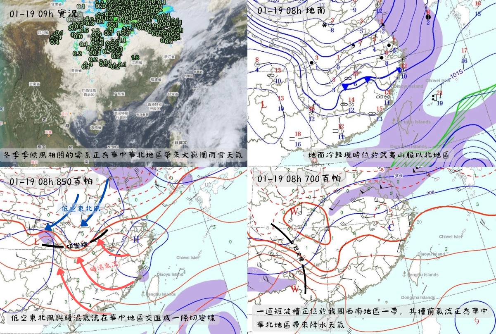
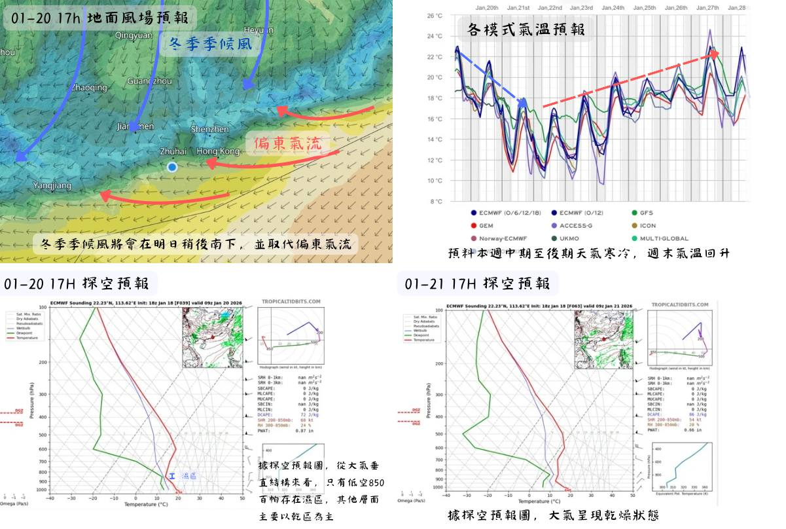

天氣形勢分析(01-19)
發布時間：2026年01月19日13時30分
現時，與冬季季候風相關的雲系正影響我國華中、華北地區，帶來大範圍雨雪天氣。 據實況監測顯示，850百帕層面，華中地區有暖濕氣流與低空東北風交匯形成的切變線，為雨雪天氣提供有利動力條件； 同時700百帕層面有一道短波槽位於我國西南地區，其槽前氣流向華中、華北輸送不穩定能量，共同造成華中、華北地區大範圍雨雪天氣。
現時，一道地面冷鋒位於武夷山脈以北地區，預料會在今日晚間至明日南下影響華南； 與此同時，偏東氣流正影響廣東沿岸，偏東氣流亦會在明日大部分時段影響廣東沿岸， 隨後冬季季候風南下抵達廣東沿岸，逐漸取代偏東氣流。
據探空預報圖顯示，冬季季候風南下過程中，低空850百帕層面存在濕區，近地面及高空其他層面均呈乾燥態勢； 本澳雲量將增多，降水機會較低，天氣整體呈乾冷特徵。
預料冬季季候風會在本週中期至後期為本澳帶來寒冷天氣，週末季候風逐步緩和，本澳氣溫回升。
 